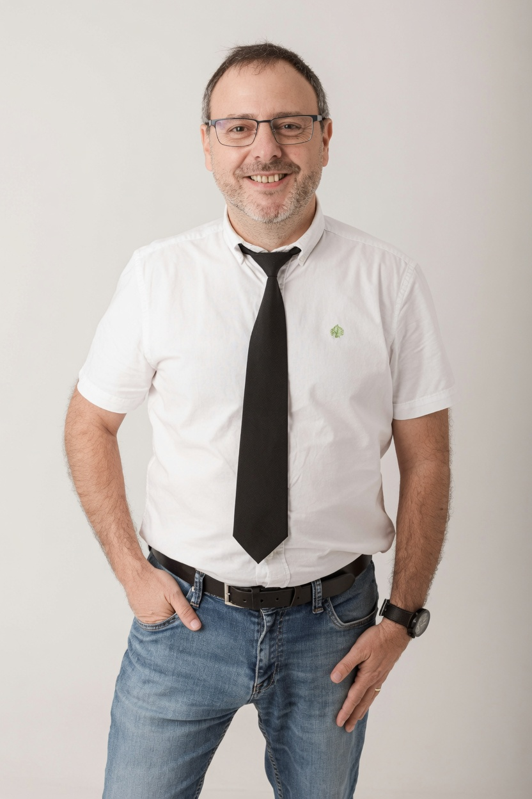

Formación académica
Doctor por la Universidad de Córdoba e Ingeniero de Montes, con especialización en agricultura de precisión, teledetección y monitorización de cultivos mediante sensores remotos.

David Gómez Candón desarrolla su actividad investigadora en la Estación Experimental de Aula Dei (EEAD-CSIC), donde lidera investigaciones centradas en la agricultura de precisión, la teledetección y el fenotipado de cultivos mediante drones, sensores remotos e imágenes multiespectrales y térmicas.
Su trabajo integra inteligencia artificial, análisis avanzado de imágenes y modelos biofísicos para mejorar la monitorización de los cultivos, optimizar el uso del agua y contribuir al desarrollo de una agricultura más eficiente y sostenible. A lo largo de su trayectoria ha trabajado en centros de investigación de España, Francia y Portugal y actualmente es responsable del Servicio Científico-Técnico de Teledetección en Agricultura (TeA).
Mi carrera científica ha estado orientada al desarrollo de herramientas de agricultura digital, teledetección y fenotipado de cultivos, colaborando con centros de investigación nacionales e internacionales.
Desarrollo de proyectos de investigación en agricultura de precisión, teledetección, inteligencia artificial y fenotipado. Responsable del Servicio Científico-Técnico de Teledetección en Agricultura (TeA).
Investigación aplicada a la monitorización de cultivos, agricultura digital y análisis de datos mediante sensores remotos.
Desarrollo de proyectos sobre gestión eficiente del agua, fenotipado y agricultura de precisión mediante drones e imágenes multiespectrales.
Colaboración internacional en proyectos de teledetección aplicada a cultivos.
Investigación en sensores remotos, análisis de imágenes y agricultura de precisión.
Participación en proyectos europeos de investigación relacionados con agricultura digital y observación remota.
Desarrollo de la tesis doctoral sobre teledetección y sensores aplicados a la monitorización del estado de los cultivos.
Mi actividad científica combina investigación básica y aplicada, transferencia tecnológica, formación de investigadores y desarrollo de nuevas herramientas para la agricultura digital.
Doctor por la Universidad de Córdoba e Ingeniero de Montes, con especialización en agricultura de precisión, teledetección y monitorización de cultivos mediante sensores remotos.
Desarrollo de metodologías basadas en drones, imágenes RGB, multiespectrales y térmicas, inteligencia artificial, aprendizaje automático, fenotipado y agricultura de precisión.
Dirección y supervisión de estudiantes de grado, máster y doctorado, así como participación en actividades docentes y cursos especializados.
Responsable del Servicio Científico-Técnico de Teledetección en Agricultura (TeA), impulsando la transferencia tecnológica hacia el sector agroalimentario mediante soluciones innovadoras.
Mi actividad investigadora se desarrolla mediante la participación y coordinación de proyectos nacionales e internacionales, publicaciones científicas de alto impacto y colaboración con instituciones de investigación y empresas del sector agroalimentario.
Participación en proyectos de investigación como MERCEDES, MedGreenSOS, ACCWA, MOIST, INVITE y otros programas nacionales e internacionales relacionados con agricultura de precisión, gestión eficiente del agua, fenotipado y teledetección.
Autor de numerosas publicaciones en revistas científicas internacionales de alto impacto sobre agricultura de precisión, sensores remotos, imágenes multiespectrales, inteligencia artificial y monitorización de cultivos.
Desarrollo de herramientas de agricultura digital, creación del Servicio Científico-Técnico de Teledetección en Agricultura (TeA), colaboración con empresas y participación en actividades de transferencia tecnológica para el sector agroalimentario.
Una trayectoria marcada por la colaboración internacional, la innovación tecnológica y la transferencia del conocimiento al sector agroalimentario.
Dirección y participación en proyectos competitivos, coordinación de actividades de investigación y desarrollo del Servicio Científico-Técnico de Teledetección en Agricultura (TeA).
Desarrollo de actividades de investigación en España, Francia y Portugal, colaborando con universidades, organismos públicos de investigación y centros tecnológicos internacionales.
Autor y revisor de publicaciones científicas en revistas internacionales especializadas, además de participante habitual en congresos científicos nacionales e internacionales.